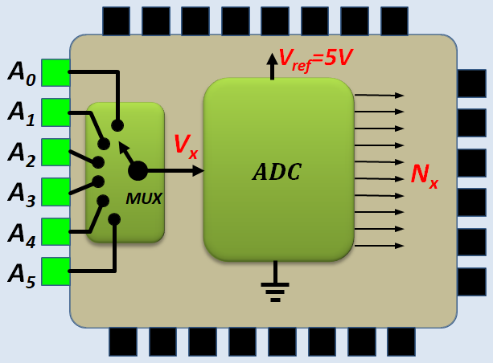

Entrées analogiques
En bref
- Arduino Uno possède 6 entrées analogiques, A0, A1, A2, A3, A4 et A5
- Pour mesurer l'entrée analogique A0 par exemple:
int N = analogRead(A0); // retourne un nombre compris entre 0 et 1023
float V = N * 5.0 / 1024.0; // Valeur en Volts de la tension sur A0
Dans l'instruction ci-dessus, Il est important que les opérandes soient de type
float pour empêcher le compilateur d'effectuer une division
entière, d'ou l'utilisation de
'5.0' et non pas '5'
Convertisseur Analogique Numérique
Un convertisseur analogique-numérique (CAN ou ADC: Analog to Digital Converter ) est un dispositif électronique qui transforme un signal analogique en une valeur numérique entière exploitable par un système numérique.
Pour simplifier nous allons considérer un ADC qui fournit une valeur numérique de deux bits
- Avec 2 bits, le nombre N peut prendre \( 2^2 = 4\) combinaisons (00=0, 01=1, 10=2, 11 = 3)
- Le convertisseur divise sa dynamique (Vref = 5V) en 4 subdivisions et affecte les valeurs de N aux tensions analogiques comme indiqué sur la figure ci-dessous
- La subdivision \( \Delta = \frac{V_{ref}}{2^2} \) constitue la résolution du Convertisseur. Dans notre cas \( \Delta = \frac{5V}{4}=1.25V \)
- Pour remonter à la valeur de V à partir de N, on utilise la formule : $$ V = N \times \Delta = N \times \frac{V_{ref}}{2^2} = N \times \frac{5V}{4}$$
- On constate que la valeur de V ainsi déterminée peut être entachée d'un erreur qui peut
atteindre \( Err_{max}=\frac{\Delta}{2} \). Pour les valeurs de V supérieures à 4.375V, qui ne
constituent qu'une toute petite fraction de la dynamique totale, l'erreur peut atteindre Δ
le tableau ci-dessous illustre cette constatation pour quelques valeurs de V - On constate que l'erreur de numérisation \(Err_{max}\) dépend du nombre de bits \(n\) du convertisseur: \( Err_{max}=\frac{\Delta}{2} = \frac{1}{2} \frac{V_{ref}}{2^n}\). Plus le nombre de bits (n) du convertisseur est important, plus l'erreur de numérisation est faible
Le Convertisseur de l'ARDUINO
- Le processeur ATmega328P de l'Arduino UNO possède un ADC de 10 bits,
- La résolution est \( \Delta = \frac{V_{ref}}{2^{10}} \),
- Avec une dynamique de 5 Volts, la résolution est \( \Delta = \frac{5V}{1024}=4,883 mV \)
- L'erreur de numérisation est \( Err_{max}=\frac{\Delta}{2} = 2.44 mV\)
- L'Arduino dispose d'un seul ADC, mais de plusieurs entrées analogiques (6 sur Arduino Uno). Ceci est rendu possible grâce à un multiplexeur analogique intégré, qui permet de sélectionner une des entrées analogiques pour la conversion, 
- L'ADC affecte la valeur de N à l'entrée analogique V comme indiqué sur la figure ci-dessous:

- Le calcul de V à partir de N se fait par la formule :
V = N × 5 / 1024
- Pendant longtemps (comme beaucoup de gens), j'ai utilisé 1023 à la place de 1024. On obtient quasiment les mêmes valeurs. Le résultat est légèrement meilleur pour V voisin de 5V mais pas pour le reste de l'intervalle. Après avoir consulté le datasheet de l'ATmega328P au paragraphe: ADC Conversion Result, j'utilise 2024 qui correspond mieux au fonctionnement interne de l'ADC. Il est vrai que la différence est minime, mais il vaut mieux se conformer aux spécifications du datasheet.

Amélioration de la précision grace à Vref

- Par défaut, le convertisseur de l'Arduino travaille dans l'intervalle [0V , 5V], C'est la dynamique ΔV du convertisseur. La résolution est donnée par \( \Delta = \frac{\Delta V}{2^n} \)
- Pour l'ADC de l'Arduino, n = 10 => \( \Delta = \frac{5}{1024}=4,883 mV \) => Erreur max = Δ/2 = 2.44mV
- Si la tension à mesurer est issue d'un capteur dont la sortie est toujours comprise dans
l'intervalle [0V , 1V], on gagnerait on précision si on peut obliger l'ADC à travailler avec une
dynamique ΔV = 1V.
On aura une résolution Δ = 1V/1024 = 0.97 mV et une erreur max = Δ/2 = 0.49 mV - Ceci est possible car l'ADC de l'Arduino travaille dans l'intervalle [0V , Vref]. Par défaut Vref = 5V mais on peut la modifier
- Pour modifier la tension de référence, on utilise la fonction analogReference() et éventuellement l'entrée AREF de l'Arduino
analogReference(DEFAULT); // Vref = 5V , errmax = 2.44 mV
analogReference(INTERNAL); // Vref = 1.1 V , errmax = 0.537 mV
analogReference(EXTERNAL); // Vref = entrée AREF , errmax = Vref/1024/2
Exemple basique
Chaque 1/2 seconde, on prend une mesure de l 'entrée A0 et on affiche le résultat sur le moniteur Série
void setup() {
Serial.begin(9600);
}
void loop() {
int N = analogRead(A0);
float V = N * 5.0 / 1024.0;
Serial.print("N = ");
Serial.print(N);
Serial.print(" => V = ");
Serial.print(V);
Serial.println(" Volts");
delay(500);
}
Exemple: Voltmètre à 6 canaux
Chaque 1/2 seconde, on mesure les 6 entrées analogiques et on affiche le résultat sur un afficheur LCD
#include <LiquidCrystal.h>
LiquidCrystal lcd(12, 10, 5, 4, 3, 2);
void setup() {
lcd.begin(16, 2);
}
void loop() {
float V;
lcd.clear();
V = analogRead(A0) * 5.0 / 1024.0;
lcd.print(V);
lcd.print(" ");
V = analogRead(A1) * 5.0 / 1024.0;
lcd.print(V);
lcd.print(" ");
V = analogRead(A2) * 5.0 / 1024.0;
lcd.print(V);
lcd.setCursor(0, 1);
V = analogRead(A3) * 5.0 / 1024.0;
lcd.print(V);
lcd.print(" ");
V = analogRead(A4) * 5.0 / 1024.0;
lcd.print(V);
lcd.print(" ");
V = analogRead(A5) * 5.0 / 1024.0;
lcd.print(V);
delay(500);
}
Exemple: Comparatif Vref=5V avec Vref=1.1V
- Dans cet exemple, on mesure une tension de 0.5V = 500mV, d'abord ave Vref=5V ensuite avec Vref=1.1V
- Le programme a été essayé sur Proteus Isis
- Les résultat montrent clairement l'intérêt de travailler avec la tension de référence interne (Vref=1.1V)
- Il est évident que si on veut mesurer une tension > 1.1V, on ne peut pas utiliser la tension de référence interne
void setup() {
Serial.begin(9600);
}
void loop() {
Serial.println("\r\nMesure d'une tension de 0.5V = 500mV");
analogReference(DEFAULT);
int N = analogRead(A0);
float V = N * 5000.0 / 1024.0;
Serial.print("Vref=5V => ");
Serial.print(V, 3);
Serial.print(" mV => erreur = ");
Serial.print(500 - V, 3);
Serial.println(" mV");
analogReference(INTERNAL);
N = analogRead(A0);
V = N * 1100.0 / 1024.0;
Serial.print("Vref=1.1V => ");
Serial.print(V, 3);
Serial.print(" mV => erreur = ");
Serial.print(500 - V, 3);
Serial.println(" mV"); delay(1000);
}
Mise en forme des signaux analogiques
L'ADC de l'Arduino ne peut numériser que les tensions comprises entre 0V et 5V. Si le signal analogique à numériser est trop faible, il faut l'amplifier avant de le numériser. S'il contient une portion négative, il faut le décaler vers le haut pour que toute ses valeur soient positives. Si le signal est trop grand, il faut l'atténuer pour qu'il rentre dans l'intervalle [0V , 5V]
En résumer, avant de numériser un signal, il faut s'assurer que sa valeur minimale est >= à 0V et que sa valeur maximale est <= 5V.
Les montages ci-dessous peuvent servir à la réalisation de cette tâche

Exemple :
- Le signal à mesurer est issu d'un capteur analogique qui fournit des valeurs comprises dans l'intervalle [-0.5V , +0.5V]
- Il faut le transformer pour pour le ramener dans l'intervalle [0V , 5V]
- On va utiliser l'amplificateur décaleur. La relation entre l'entrée et la sortie est Vs = A Ve + B Vr
- La dynamique du signal d'entrée est ΔVe = 1V, celle du signal de sortie est ΔVs = 5 => le gain de l'ampli sera A = 5/1 = 5
- Avec ce gain, le signal de sortie serait compris entre -2.5V et +2.5V donc il faut le décaler vers le haut de 2.5V => B Vr = 2.5
- Si on prend Vr = 5V => B = 0.5 => R2/R1 = A/B = 5/0.5 = 10 => on prend R2=10k , R1 = 1k
- Rb/Ra = A+B-1 = 5 + 0.5 - 1 = 4.5 => On prend Rb=45k , Ra = 10k